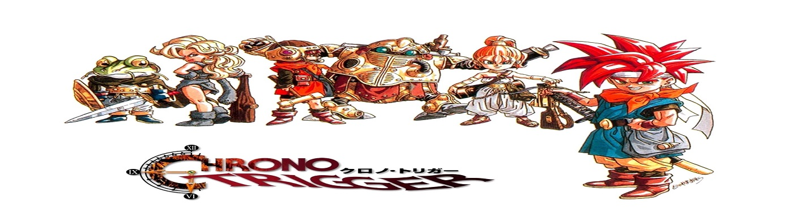
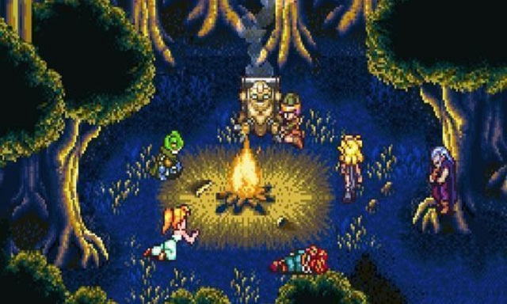
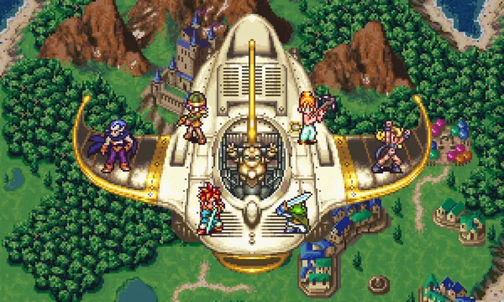
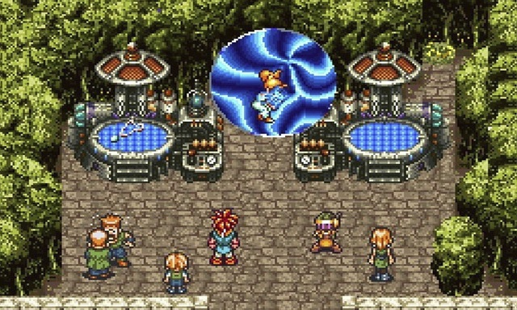
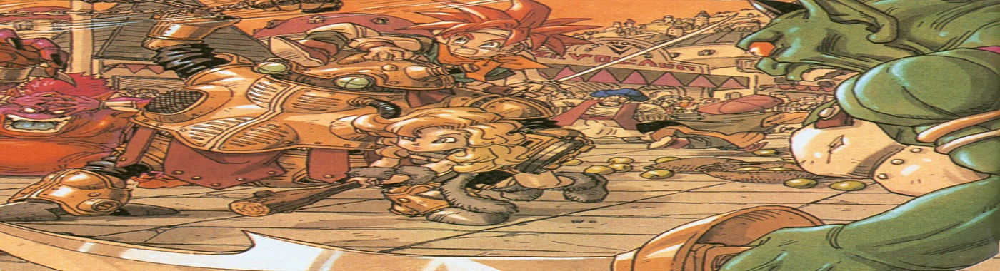

- 
- 
- 

- 

- 
Clique aqui e veja os detalhes dos personagens
Personagens"Mal nos conhecemos, mas de alguma forma eu sabia que você viria por mim..."
MARLE
"Se a história está para mudar, que mude. Se o mundo está a ser destuído então que seja. Se o meu destino é morrer, eu devo simplesmente rir."
MAGUS
"Máquinas não são capazes do mal. Os humanos os fazem assim."
LUCCA
"Abaixe sua guarda, e você está permitindo que o inimigo entre."
FROG
"Ayla luta enquanto está vivo! Ganhe e viva. Perder e morrer. Regra da vida. Nenhuma regra de alteração."
AYLA
"Nome? Ah, meu número de série. É R66-Y."
ROBO
Lançado no ano de 1995
Lançado no ano de 1999
Lançado no ano de 2008
Clique aqui e veja os detalhes do game
SobreClique aqui e veja os detalhes dos personagens
Personagens